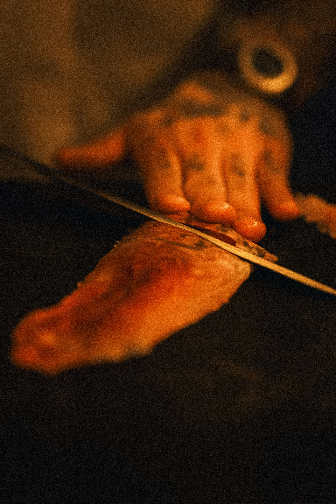
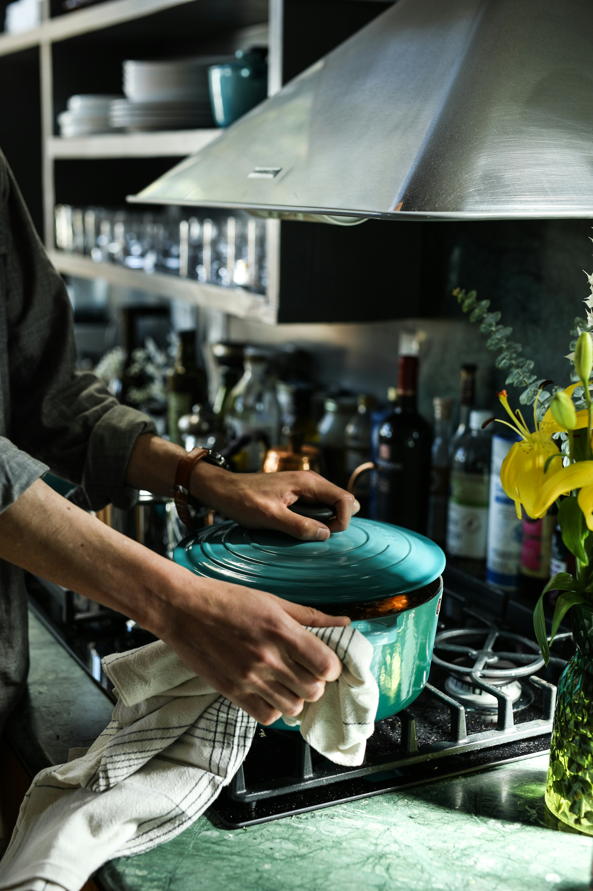

LET'S COOK
MANGO SALMON
Really simple and flavourful salmon in a sweet mango and spicy sauce.

LET'S COOK
Really simple and flavourful salmon in a sweet mango and spicy sauce.
Portions
4“Add the lemon juice at the very end. It keeps the sauce bright and balances the sweetness of the mango chutney.”
Good cooking starts with the right tools.

A reliable knife makes preparation easier and more precise.
Recommended by Craig McAnuff

A dependable cooking pot helps distribute the heat evenly.
Recommended by Craig McAnuff

Transform salmon fillets into these spicy salmon rice bowls in no time.

For such a simple dish, this salmon pasta tastes really special.

These spicy beef fajitas are packed with fresh flavours.
COMMUNITY REVIEWS

HOME COOK
“Really easy to follow and perfect for a weekday dinner. I loved how quickly it came together, and my family enjoyed it too.”
“A lovely combination of sweet and spicy flavours. Next time I would add a little bit chilli, but the recipe was simple to adapt to my own taste.”

PROFESSIONAL CHEF
“The balance between the mango chutney, lemon and salmon works very well. A simple recipe with a strong flavour profile.”